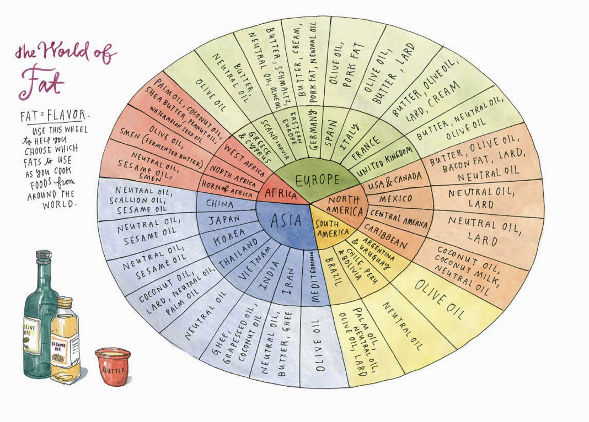

<!DOCTYPE html>
<html lang="en">

<head>
    <!-- Required meta tags always come first -->
    <meta charset="utf-8">
    <meta name="viewport" content="width=device-width, initial-scale=1, shrink-to-fit=no">
    <meta http-equiv="x-ua-compatible" content="ie=edge"> <!-- Bootstrap CSS -->
    <!-- build:css ../css/resource.css -->
    <link rel="stylesheet" href="../node_modules/bootstrap/dist/css/bootstrap.min.css">
	<link rel="stylesheet" href="../css/styles.css">
	<link rel="stylesheet" href="../css/fonts.css">
	<!-- endbuild -->
	<!-- favicon -->
	<link rel="shortcut icon" type="image/x-icon" href="../favicon.ico">
	<title>Salt Fat Acid Heat</title>
</head>

<body>
    <div class="avatar-holder">
        
    </div>
    <div class="container non-footer">
        <div class="row ">
            <nav class="navbar navbar-expand-md nav-bar">
                <button class="navbar-toggler ml-auto" type="button" data-toggle="collapse" data-target="#Navbar">
                    <span class="navbar-toggler-icon"></span>
                </button>
                <div class="collapse navbar-collapse" id="Navbar">
                    <ul class="navbar-nav mr-auto">
                        <li class="nav-item nav-button-left"><a class="nav-link" href="../index.html">Home</a></li>
                    </ul>
                    <ul class="navbar-nav">
                        <li class="nav-item nav-button-right"><a class="nav-link" href="../Resources/Projects.html">Projects</a></li>
                        <li class="nav-item nav-button-right"><a class="nav-link" href="../Resources/SaltFatAcidHeat.html">Salt Fat...</a></li>
                        <li class="nav-item nav-button-right"><a class="nav-link" href="../Resources/WeightsAndVolumes.html">Conversions</a></li>
                        <li class="nav-item nav-button-right"><a class="nav-link" href="../Resources/WhatsThatCalledInGerman.html">Names</a></li>
                        <li class="nav-item nav-button-right"><a class="nav-link" href="../Resources/WhereCanIBuy.html">Shopping</a></li>
                        <li class="nav-item nav-button-right"><a class="nav-link" href="../Resources/CookingLog.html">Log</a></li>
                    </ul>
                </div>
            </nav>
        </div>
        <div class="row">
            <div class="page-title">Salt Fat Acid Heat</div>
        </div>
        <div class="row guide">
            <div class="col-12">
                <div class="guide-section-first">Salt</div>
                <div class="row">
                    <div class="col-12 col-md-6 order-md-1 order-2">
                        <div><strong>If food tastes flat</strong>, the most common problem is not enough salt</div>
                        <div><strong>Salt with salty things</strong>, not just salt e.g. Olives, Capers, Pecorino</div>
                        <div><strong>Salt meat</strong> well in advance, to improve both flavor and texture. Overnight is good, maybe even 2 days for tough cuts</div>
                        <div><strong>Salt fish</strong> about 15 minutes in advance</div>
                        <div><strong>Boiling vegetables?</strong> You need highly salted water - it'll season them by osmosis, keep them green, cook them quickr by breaking down pectin</div>
                        <div><strong>Salting watery vegetables:</strong> tomatoes, zucchini and eggplant should be salted a bit in advance of grilling or roasting (maybe 20 minutes) to allow salt the time to break down pectins. During this time, osmosis will also cause some water loss, so dry the vegetables before cooking</div>
                        <div><strong>Salt beans during soaking</strong> - it doesn't really make them tough</div>
                        <div><strong>Salt strengthens gluten</strong> - so add at the correct time when baking depending on whether you want something strong or tender</div>
                    </div>
                    <div class="col-12 col-md-6 order-md-2 order-1">
                        <table class = "table">
                            <thead>
                                <th>Food Item</th>
                                <th>Salt to add</th>
                            </thead>
                            <tbody>
                                <tr><td>Boneless Meat</td><td>1.25%</td></tr>
                                <tr><td>Bone-in Meat</td><td>1.5%</td></tr>
                                <tr><td>Vegetables and Grains</td><td>1%</td></tr>
                                <tr><td>Blanching or Pasta Water</td><td>1%</td></tr>
                                <tr><td>Per g Flour in Dough or Batter</td><td>2.5%</td></tr>
                            </tbody>
                            <caption>Table 1. Salt to add to foods during cooking, as a percentage of the food weight</caption>
                        </table>
                    </div>
                </div>

                <div class="guide-section">Fat</div>
                <div class="row">
                    <div class="col-12 col-md-6 order-md-1 order-2">
                        <div><strong>Olive Oil</strong> is good for about 12 months after production</div>
                        <div><strong>Preheat pans before adding fat</strong> to reduce the amount of time fat has to deteriorate</div>
                        <div><strong>To get crispness</strong> do everything in your power to keep the pan and the fat hot</div>
                        <div><strong>Keep crispy foods</strong> crispy longer by putting in a rack of some sort after cooking e.g. battered fish</div>
                        <div><strong>Oil-in-water emulsions work better</strong> when their ingredients are not too hot or cold</div>
                        <div><strong>If your emulsion starts breaking</strong> as you're making it, STOP ADDING OIL. Fixes: 1) Whisking like hell. 2) Adding a splash of cold water. 3) Get a new bowl, add 0.5tsp hot water, whisk with your dirty whisk until foamy, gradually whisk in your fucked up emulsion. 4) Start again, using your fucked up emulsion as if it was just the fat</div>
                    </div>
                    <div class="col-12 col-md-6 order-md-2 order-1">
                        <div></div>
                    </div>
                </div>
            </div>
        </div>
    </div>
    <footer class="footer-container container">
        <div class="footer-spacer"></div>
        <div class="footer">
            <div class="footer-text">Footer - not much here really</div>
        </div>
    </footer>
</body>

<!-- jQuery first, then Popper.js, then Bootstrap JS. -->
<!-- build:js ../js/resource.js -->
<script src="../node_modules/jquery/dist/jquery.slim.min.js"></script>
<script src="../node_modules/popper.js/dist/umd/popper.min.js"></script>
<script src="../node_modules/bootstrap/dist/js/bootstrap.min.js"></script>
<script src="../js/avatar.js"></script>
<!-- endbuild -->

</html>
